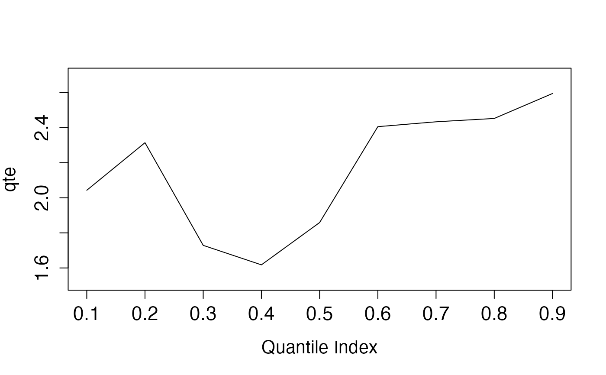
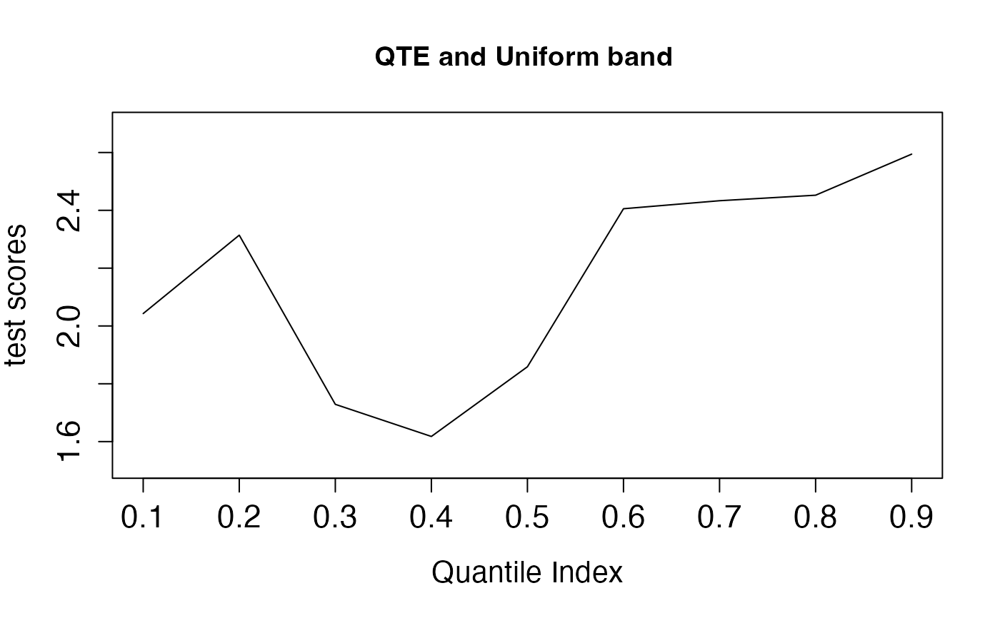
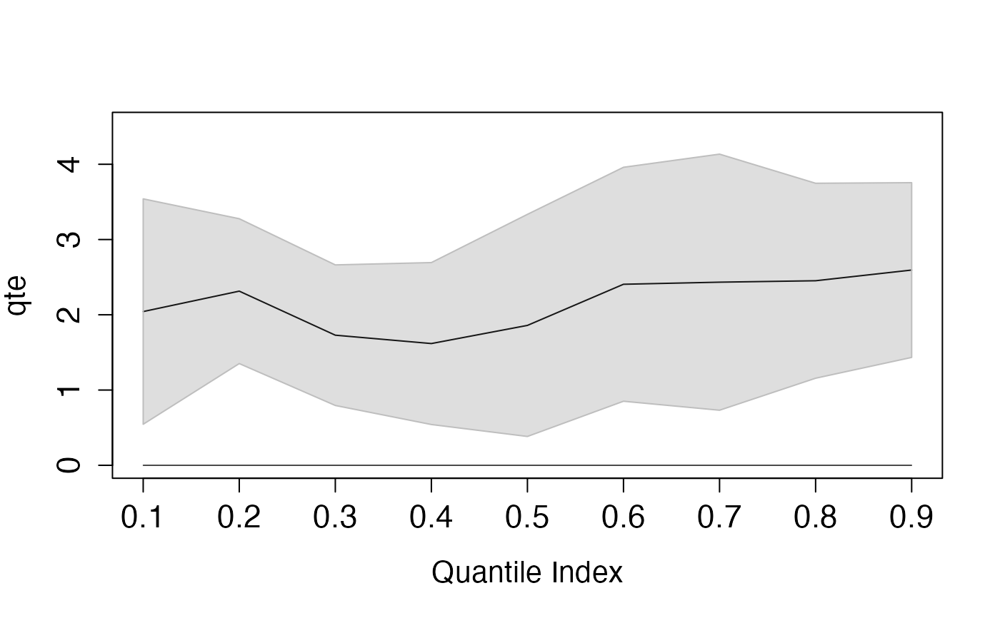
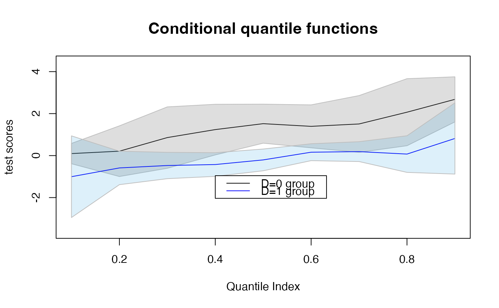

QTE plots
plot.qte.Rdplot.qte generates plots summarizing the QTE estimates and their uniform confidence bands, helping users visualize the results.
It also makes plots for conditional quantile processes for each side of the cutoff.
Usage
# S3 method for qte
plot(x, ptype = 1, ytext = NULL, mtext = NULL, subtext = NULL, ...)Arguments
- x
an object of class "qte" or "summary.qte" produce by
rd.qte.- ptype
either 1 or 2. Set ptype=1 for the QTE plots, and ptype=2 for the conditional quantile plots. The default value is 1.
- ytext
the y-axis label.
- mtext
the title of the plot.
- subtext
the subtitles (used for the conditional quantile plots only).
- ...
optional arguments to plot
Examples
# Without covariate
n = 500
x = runif(n,min=-4,max=4)
d = (x > 0)
y = x + 0.3*(x^2) - 0.1*(x^3) + 1.5*d + rnorm(n)
tlevel = seq(0.1,0.9,by=0.1)
A <- rd.qte(y=y,x=x,d=d,x0=0,z0=NULL,tau=tlevel,bdw=2,bias=1)
plot(A)

y.text = "test scores"
m.text = "QTE and Uniform band"
plot(A,ytext=y.text,mtext=m.text)

A2 <- summary(A,alpha=0.1)
plot(A2)

z = sample(c(0,1),n,replace=TRUE)
y = x + 0.3*(x^2) - 0.1*(x^3) + 1.5*d + d*z + rnorm(n)
A <- rd.qte(y=y,x=cbind(x,z),d=d,x0=0,z0=c(0,1),tau=tlevel,bdw=2,bias=1)
A2 <- summary(A,alpha=0.1)
y.text = "test scores"
m.text = c("D=0","D=1")
plot(A2,ytext=y.text,mtext=m.text)
# conditional quantile plots
n = 500
x = runif(n,min=-4,max=4)
d = (x > 0)
y = x + 0.3*(x^2) - 0.1*(x^3) + 1.5*d + rnorm(n)
tlevel = seq(0.1,0.9,by=0.1)
A <- rd.qte(y=y,x=x,d=d,x0=0,z0=NULL,tau=tlevel,bdw=2,bias=1)
A2 <- summary(A,alpha=0.1)
y.text = "test scores"
m.text = "Conditional quantile functions"
sub.text = c("D=0 group","D=1 group")
plot(A2,ptype=2,ytext=y.text,mtext=m.text,subtext=sub.text)
